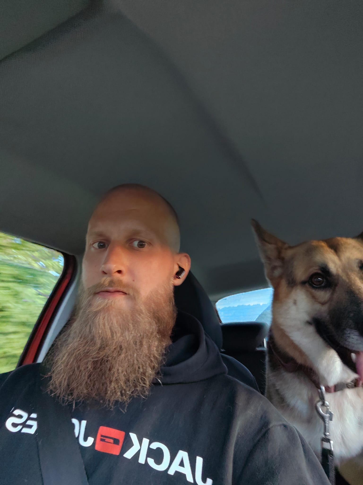

Nils Nehring
Gründer & Lead-EntwicklerIch bin Nils – Gründer von Nils-Digital und dein direkter Ansprechpartner für Konzept, Umsetzung und Kommunikation. Ich entwickle Webseiten, Apps und digitale Lösungen, die nicht nur gut aussehen, sondern echte Ergebnisse liefern. Mein Anspruch: Du bekommst mich persönlich – als festen Partner, der dein Projekt von der ersten Idee bis zum Launch begleitet.
Webdesign
Frontend
Backend
KI-Automatisierung
SEO
Projektleitung
Arbeitsweise — Direkte Kommunikation, kurze Wege, transparente Absprachen. Kein Ticket-System, kein anonymes Support-Team.